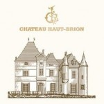

Do arquivo RENDEZVOUS
A história por trás das imagens
Em uma série de vídeos no Château Haut-Brion, Príncipe Robert de Luxemburgo e Jean-Philippe DELMAS, falam dos Châteaux e dos vinhos do Domaine Clarence Dillon:
Château Haut-Brion
Château Haut-Brion Blanc
Le Clarence du Haut-Brion – segundo vinho do Château Haut-Brion
Château La Mission Haut-Brion
Château La Mission Haut-Brion Blanc
La Chapelle de la Mission Haut-Brion – segundo vinho do Château La Mission Haut-Brion
Château Quintus – Saint Emilion
Le Dragon de Quintus – Saint Emilion – segundo vinho do Château Quintus
Clarendelle – Bordeaux - Inspiré par Haut-Brion
Tinto, Branco, Rosé e Licoroso (Amberwine)
Príncipe Robert fala ainda da celebração dos 350 anos da primeira menção do vinho do Château Haut-Brion (nos Diários de Samuel PEPYS), seu entusiasmo com a safra 2012, suas impressões pessoais sobre cada vinho de seu domínio, sobre o prêmio que está oferecendo para aquele que encontrar uma menção escrita de Haut-Brion que seja anterior a 1660, e que já garantiu seu ingresso para o jogo final da Copa no Rio de Janeiro.
Conheça mais sobre o Príncipe Robert de Luxemburgo
Texto de arquivo · 2013
